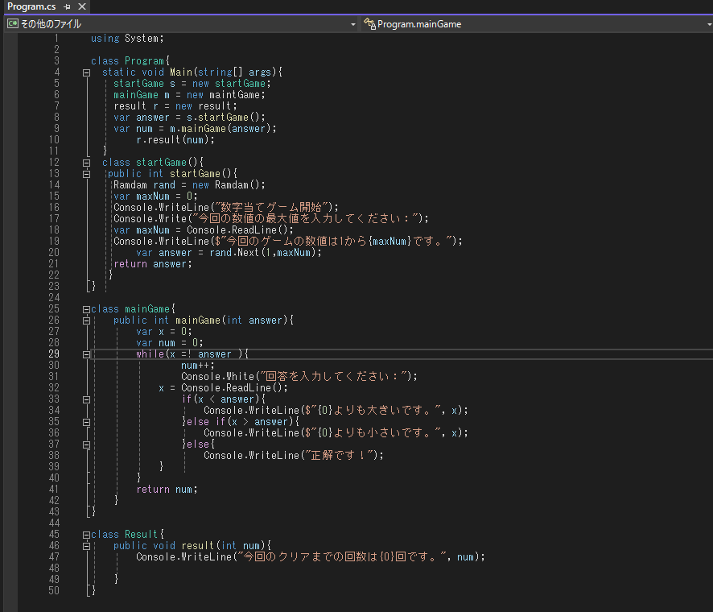
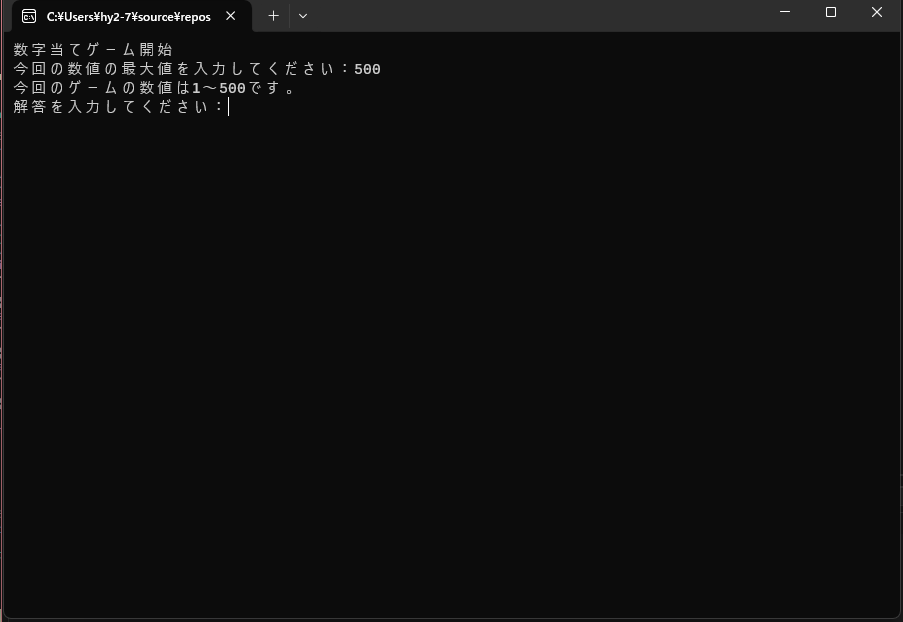
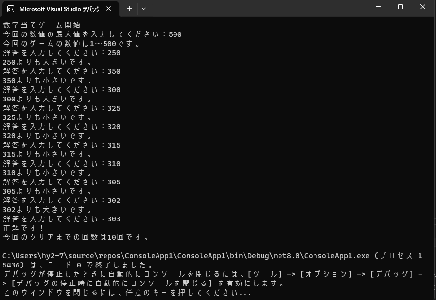

初めてのC#を使って実行ができるプログラムを作りました。
◆開発/デバッグ環境・・・Visual Studio
◆言語・・・C#
◆制作理由・・・案件紹介に伴っての基礎知識習得のため。
◆作成した時の流れ
1, 数字あてゲームの全体像を考え、ゲーム開始とゲーム進行と結果発表に分けて考ました。
2,メインクラスでは各クラスを呼び出すためだけに使用するようにしました。
作成したソースコードが以下の通りになっています。

数字あてゲーム
1, ソースコード

今回は初めてのC#を使用するプログラミングのため
簡単なものシステムをクラス分けに重点を置き、見やすいように作ってみました。
ゲーム開始時のクラス、ゲーム進行クラス、結果発表クラスに分けて作成しました。
2, 実行
始めにゲームで扱う数字の最大値を任意で決められるようにしました。
今回は500を入力してゲーム開始です。
3, ゲーム進行
解答を入力するとその数値より大きいか小さいかを判断して
プレイヤーにヒントを提示するようになっています。
作成した感想
◆簡単な内容かつJavaに似ている部分が多かったため
思っていたよりも難なく作成することができました。
作成時間は調べながら進めたのでおおよそ1時間程度です。
◆まだまだ勉強中のためある程度C#への理解が深まったら別のシステムを考えてみようかと思います。